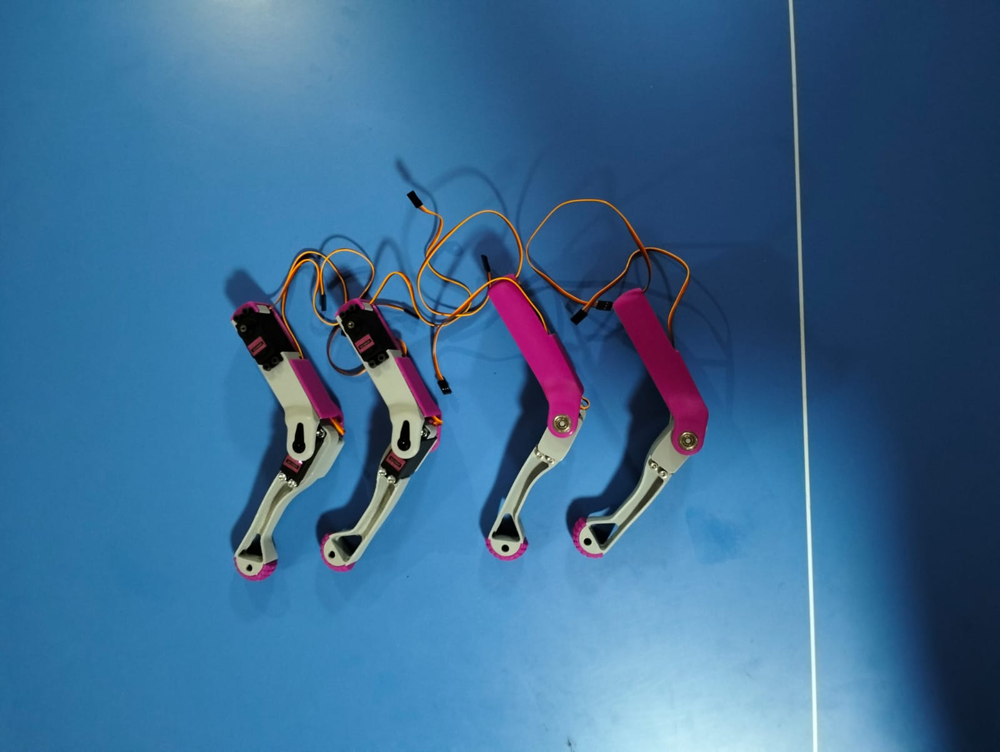

Montaj Aşamaları
Pembe kaplamalar
Pembe dış kaplamalar

Gri kaplamalar
Gri iç kaplamalar
Ayaklar ve Servoların Montaj Aşaması
Her bacak kısmına 1'er adet MG996R servo motor montaj edilecek.
Ayakların Servolarla Birleşmiş Hali
Dikkatli bir şekilde servo motorlar bacak kısmına montaj edildi.
Ayaklar ve Bacakların Birleşmesi
Ayak kısımlarının dikkatli bir şekilde bacak kısımlarında bulunan çıkıntılara montajlanması.
Bacak Kısmına Pempe Kaplamaların Montajı
Bacak kısmında ki yere ilk olarak MG996R servo motorları yerleştirdikten sonra pembe kaplamları bacak kısımına montaj edilir.
Omuz Kısmı Montajı
Robot köpeğin rahat sağa sola hareket etmesi için MG996R servo motorların mil kısmı omuz parçasının içine gelecek şekilde yerleştirilir.

Servo Motorların Yerleştirilmesi
Her bacağa 3'er adet MG996R servo motor yerleştirildi. Bu şekilde robotun dört bacağındaki toplam 12 servo motorla hareket sağlanmıştır.
Gövde Montajı
Robot köpeğin ana gövde parçaları 3D yazıcı ile üretildikten sonra vidalarla birleştirildi.
PCA9685 Servo Sürücü Bağlantısı
Tüm servo motorlar PCA9685 modülüne kablo ile bağlandı, güç bağlantıları dikkatlice yapıldı.
Arduino Mega Kurulumu
Arduino Mega, gövde üzerindeki uygun boşluğa yerleştirildi.
HC-SR04 Ultrasonik Sensör Montajı
Ön tarafa HC-SR04 sensörü monte edilerek çevresel engel algılama sağlandı.

HC-SR04 Ultrasonik Sensör Montajı2
Ön tarafa HC-SR04 sensörü monte edilerek çevresel engel algılama sağlandı.

Gövdenin içi
Robot köpeğin gövdesinin içine gerekli sensöler eklendi.

LCD Ekran ve buttonun montajı
LCD ekran üst kısma monte edilerek verilerin görüntülenmesi sağlandı, buton da yanına eklendi

Lcd Ekran ve Button Montajının içi
Batarya ve Güç Yönetimi
7.4V Li-ion batarya, BMS devresi ve step-down regülatör ile birlikte yerleştirilerek enerji dağıtımı düzenlendi.
Montajlı Hali
Montaj tamamlandıktan sonraki ilk hali.